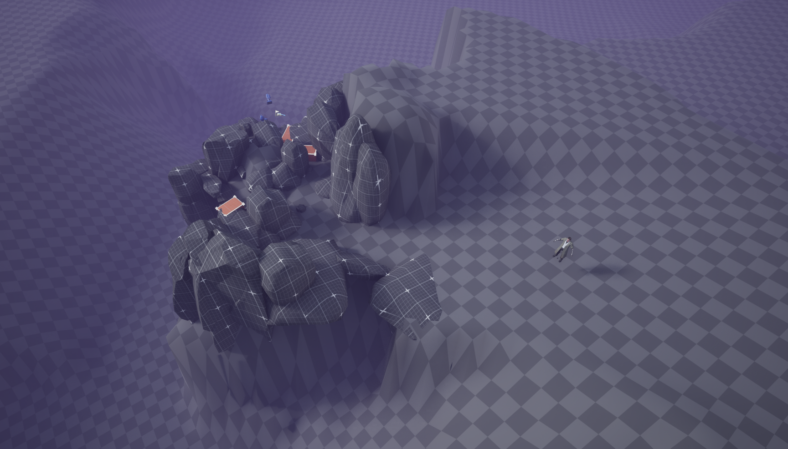
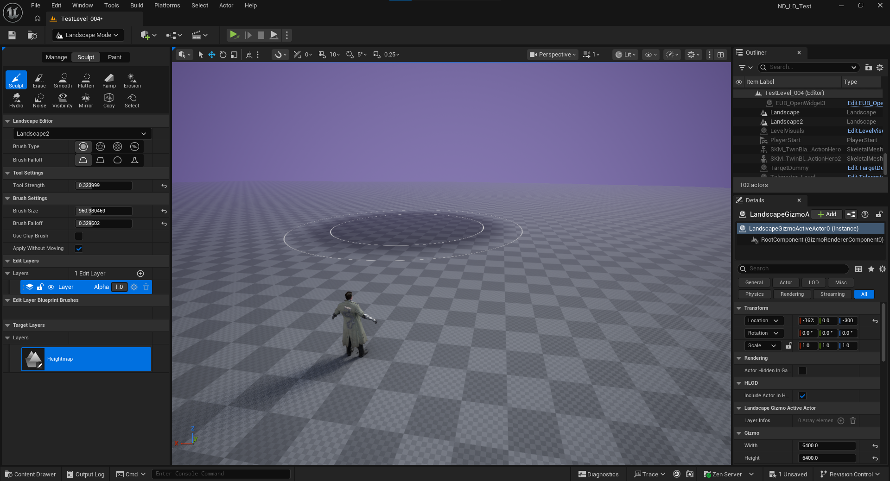
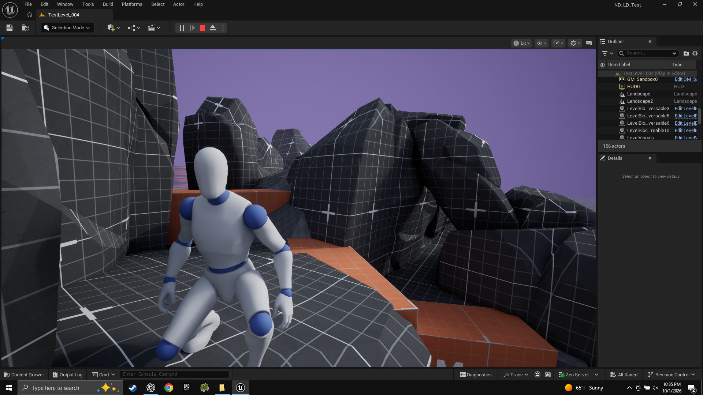
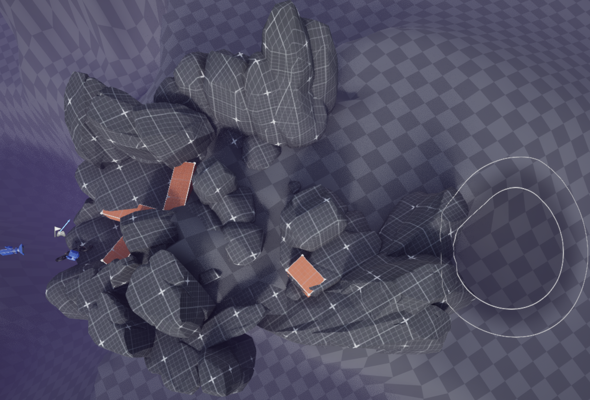
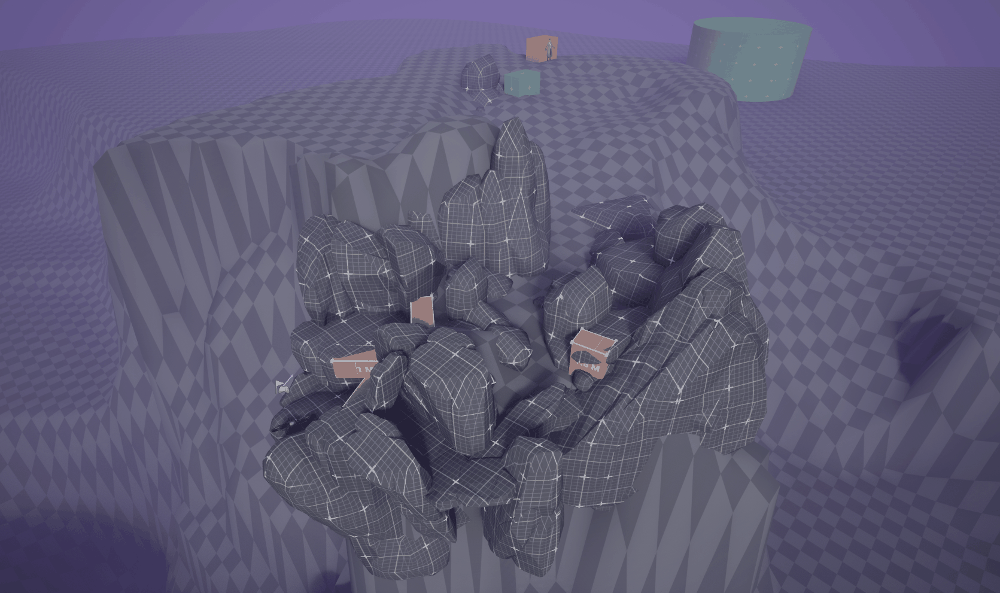
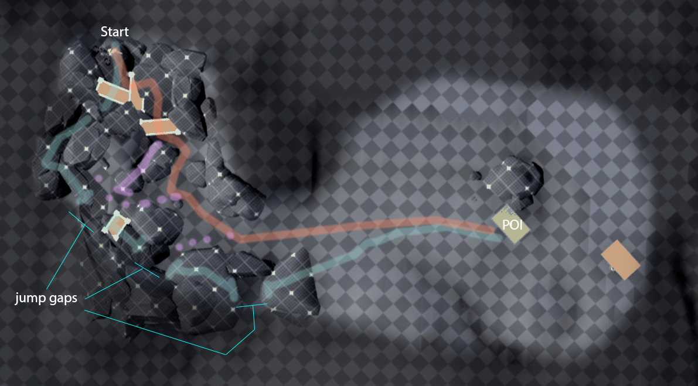

Opening accident / early routeThe crash works best when the player has a moment to recover, look around, and understand the space before moving on.

I started with one simple idea: the player is pinned under a motorcycle on the side of a mountain. From there I built outward, figuring out where they look, where they go, and how much choice I could give them without turning the place into a maze.
A landscape, a character, a motorcycle, and a rough idea. The first job was just getting the scale right and finding a way out of the crash that felt interesting.


The first version technically worked. It was also pretty boring. Most of this first pass was tightening paths, moving rocks, testing the jump, and trying to make each route feel like its own little experience.
I wanted a meaningful choice, not two separate levels. Both routes are short, they play differently, and they bring the player back together before moving into the campsite.

The right side is faster and more exposed. The left side is tighter and more physical. Both get you to the same place, but the few seconds in between should feel noticeably different.
The rock section is supposed to feel dense and a little uncomfortable. Then you climb out and suddenly have room to look around. That change in scale is doing a lot of the work.

The campsite isn't enormous. It just feels that way after spending time squeezed between rocks. I like getting that kind of payoff from the layout instead of just making everything physically huge.
I wasn't trying to make a pretty environment yet. I was trying to answer a few basic questions and make sure the player experience worked before adding more stuff.

If the player can stare at the destination the whole time, it stops being interesting. I'd rather let them catch a glimpse, lose it behind the terrain, then find it again later.
Left and right shouldn't just be different shapes. One is exposed and direct; the other is tighter and slower. The player should feel that difference without needing it explained.
After spending time in the rocks, the campsite needs to feel like a release. More visibility, more room to scan, and a chance to get your bearings again.
The rocks give me enough shape to judge the route without turning this into an environment-art project. If the layout doesn't work now, prettier rocks aren't going to save it.
Before I built anything, I dropped a few colored boxes into the space and ran the approach. It was a fast way to answer a basic question: where should this thing actually live?